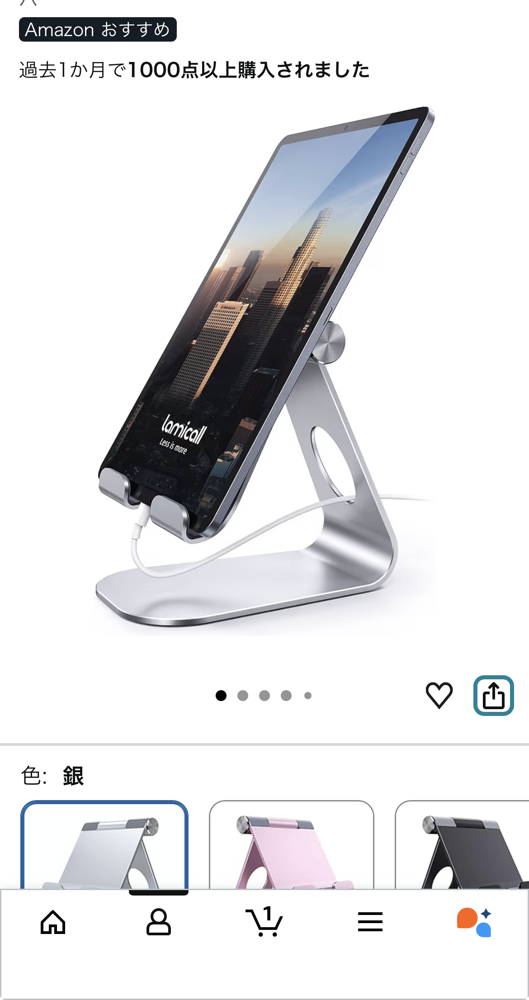

アルミ製スマホ・タブレットスタンドは普段使いのベストバイ？角度調節と安定感を口コミから徹底レビュー
公開日：2025-10-05（Amazonレビューをもとに構成）

折りたたまない前提なら“最良の選択肢”になり得る理由
今回レビューするのは、口コミで「折りたたむ必要がなければ最良の選択肢かも？」と高く評価された アルミ製スマホ・タブレットスタンドです。星5つ中5という満点レビューで、 特にデザイン性・安定感・角度調節のしやすさが高く評価されています。
折りたたみ式ではなく据え置き前提の構造だからこそ、余計な可動部がなく、 見た目の美しさと剛性を両立しているのが特徴。リビングやデスクに置きっぱなしで使う用途に 非常に向いているガジェットです。
角度調節が“ちょうどいい硬さ”で動画視聴も快適
レビューでは「角度調節も良い感じに可能」と書かれており、ここが据え置きスタンドの満足度を大きく左右します。 安価なスタンドにありがちな“緩すぎて勝手に倒れる”“固すぎて動かない”といった問題がなく、 スムーズに動くのに、使用中はしっかり固定される絶妙なトルク感が期待できます。
実際の使用シーンとしては、
- ソファでYouTubeやPrime Videoを視聴
- オンライン会議でスマホを固定
- キッチンでレシピ動画を見ながら調理
こうした場面で角度調節がしやすいと、首や肩の負担が大きく減り、日常の快適度が一段上がります。
見えない部分の滑り止めラバーが“安定感の正体”
口コミで特に印象的なのが「見えない部分に滑り止めラバーが付いているので安定します」という一文。 スタンドは見た目だけで選ぶと意外と滑りやすかったりガタついたりしますが、 この製品は底面や接地部にラバーが仕込まれていることで、 木製テーブル・ガラステーブルでもズレにくい構造になっています。
アルミ素材の適度な重さも相まって、ケーブルを抜き差ししてもスタンドが動きにくく、 据え置きガジェットとしての完成度が高いと感じられます。
ブランドにこだわらないなら“コスパ最強クラス”
レビューの締めには「メーカーにこだわりがなければ最良の選択肢かも？？」と書かれており、 これはブランドよりも実用性と価格を重視する人に最適であることを示しています。
有名ブランドのスタンドは価格が高くなりがちですが、 この製品はアルミの質感・安定感・角度調節のしやすさを備えつつ、 据え置き用途に必要な性能をしっかり満たしています。
リビングやデスクに“スマホの定位置”を作りたい人にとっては、 毎日使うガジェットとして非常に満足度が高いはずです。
こんな人におすすめ
- リビングにスマホ・タブレットの置き場所を作りたい人
- 折りたたみよりも安定感とデザイン性を重視する人
- 動画視聴・ビデオ通話を快適にしたい人
- コスパの良い据え置きガジェットを探している人
持ち運びが不要で、家の中で“置きっぱなし運用”したい人には特におすすめできる一台です。
Amazonで最新価格をチェック
カラー展開や価格は変動するため、購入前にAmazonで最新情報を確認するのがおすすめです。